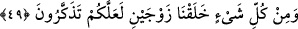

nitelendirilerek söylediklerinin gerçek ilimle alâkasının bulunmadığı belirtilmiştir.
49. Her şeyden de çift çift yarattık ki, düşünüp öğüt alasınız.
“Her şeyden” yâni mevcudâtın her cinsinden. Burada “şey”den murad ya cins veya
canlılardır. “Çift çift” iki sınıf ve muhtelif iki nev’i “yarattık.” Bunlar; erkek-dişi,
sema-arz, gece-gündüz, güneş-ay, yaz-kış, kara-deniz, ova-dağ, insan-cin, nur-zulmet,
beyaz-siyah, dünya-âhiret, îman-küfür, saâdet-şakâvet, hak-bâtıl, tatlı-acı, ölüm-hayat,
yaş-kuru, hareketsiz-hareketli, çamurlu (çorak)-münbit, konuşan-susan, hilm-kahr,
cömertlik-cimrilik, utanma-zillet, kudret-acz, kuvvet-zaaf, ilim-cehâlet, sıhhat-hastalık,
zenginlik-fakirlik, gülmek-ağlamak, sevinç-üzüntü, üst-alt, sağ-sol, güney-kuzey, ön-
arka, sıcaklık-soğukluk ve daha pek çoğu...
Râğıb şöyle demiştir: “İki çift”ten murad şunlar olabilir: Her cins canlının erkek ve
dişisinden oluşan türü veya bunların her biri, canlılar dışındaki mest-ayakkabı gibi
birbirlerini tamamlayan çiftler yahut da benzerlik ve zıtlıklarıyla bir yakınlığı bulunan
iki nesnenin her biri.
“Her şeyden iki çift yarattık” âyetiyle dikkat çekilmek istenen husus; her şeyin
cevher-a’râz, madde ve sûretten oluşturulduğu, hiç bir şeyin Allah’ın sun’undan berî
olmadığı, terkipler hâlinde yaratılan eşyanın bir mürekkibe ve bir Sâni’e/yaratıcıya
ihtiyaç duyduğu ve bunun ise el-Ferdu’s-Samed olan Allah’tan başkası olamayacağıdır.
“Her şeyden iki çift yarattık” âyetindeki “her şey”den kasıd, âlemde bulunan her bir
nesnedir. Zirâ her nesne; bir zıddı, benzeri ve terkîbi bulunması, onun bu ilişki ve
terkibinden ayrılmaması hasebiyle bir çifttir. İşte “zevceyn” kelimesi ile bu
kasdedilmiştir. Zira her ne kadar bir nesnenin zıddı veya benzeri bulunmasa da onun,
sûret veya madde olarak birleştiği bir terkibi vardır. İşte bu terkip de o nesne için bir
çift oluşu ifâde eder.
Harrâz (k.s) şöyle demiştir: Rubûbiyet ve vahdâniyetin en açık belirtisi, ferdâniyetin
sadece kendisine âid olması için Allah Teâlâ’nın çiftleri yaratmasıdır.
“Düşünüp öğüt alasınız diye.” Yâni yaptığımız bütün bu göğün sağlam kılınması,
yerin döşek gibi yayılması, çiftlerin yaratılması gibi fiillerimize bakıp düşünesiniz ve
bunun akabinde de Allah’ın herşeyi yaratıp rızkını verdiğini, ibâdete lâyık olduğunu, bu
yüzden de bütün canlıları tekrar diriltme kudretine sâhip bulunduğunu öğrenerek bu
bilgilerin muktezâsınca âmel edesiniz diyedir.
Olur ki siz nasihat dinleyici olur ve bilirsiniz ki vahdâniyet havâs-ı mümkinâttan
değildir. Ayrıca ben vâcib bizzâtım ve vâcib, aded kabul etmez ve parçalara ayrılmaz.
Hakk’ın zâtı kısımlara ayrılmak ve sayılmaktan münezzehtir